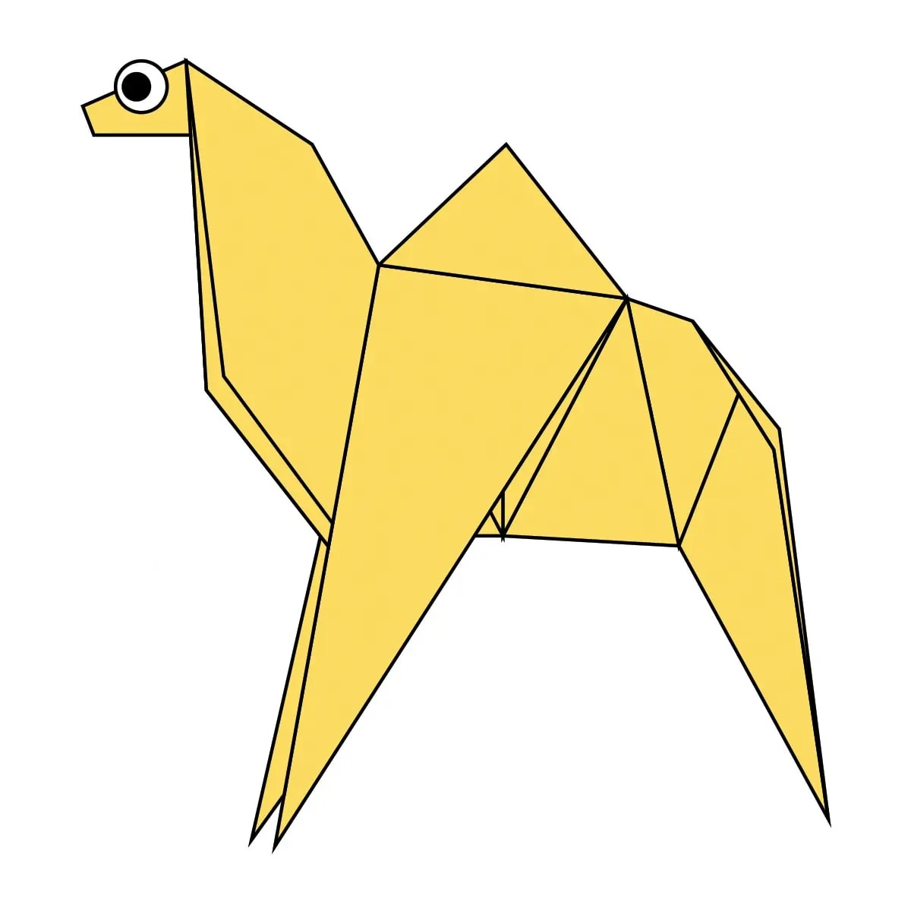
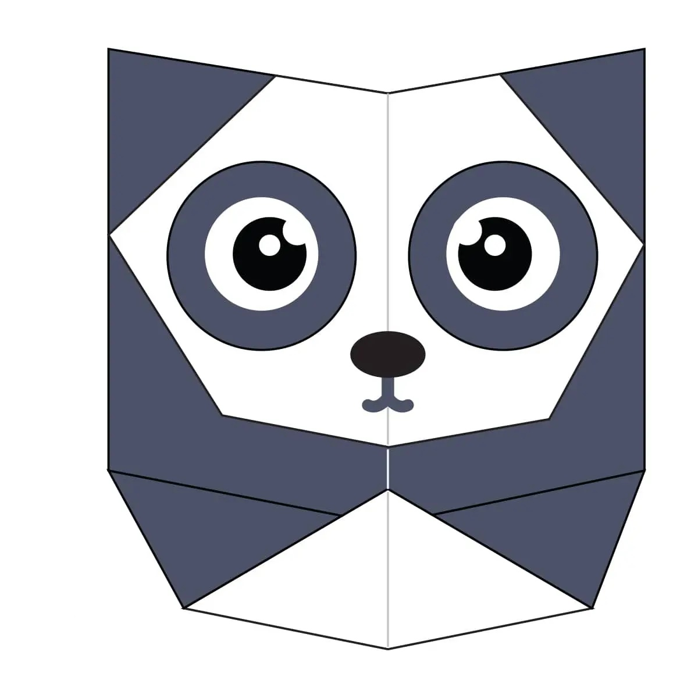
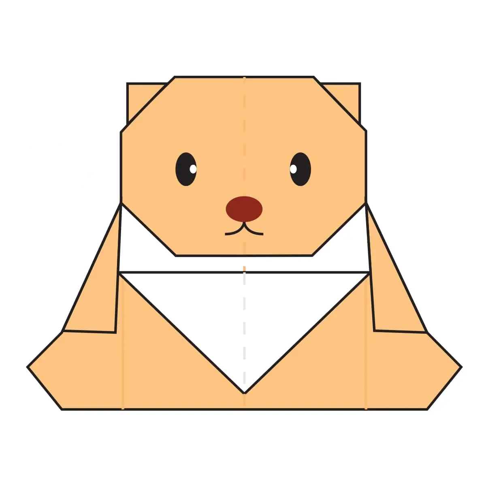

Origami Designs
Origami Instructions & Diagrams
Step by Step diagrams are probably the most popular and easiest to follow way to show how to fold things out of paper. Trying to find good origami structures on the Internet can be a lot of work though. To help your search we have put together the largest database of free origami diagrams anywhere on the Internet.

1:One humped or “dromedary” camels and two humped Bactrian camels are the 2 types of camels.
2:Camels have three sets of eyelids and two rows of eyelashes to keep sand out of their eyes.
3:Camels have thick lips which let them eat thorny plants.

1:The feet of chameleon work like salad tongs.
2:Chameleons are very wild in terms of size.
3:They mainly change color in order to communicate or regulate body temperature.

1:Pigeons are incredibly complex and intelligent animals.
2:Pigeons are renowned for their outstanding navigational abilities.
3:Pigeons are highly sociable animals.

1:A giant panda is much bigger than your teddy bear.
2:Giant pandas are good at climbing trees and can also swim.
3:Pandas go from pink to white and black (or brown).

1:A teddy-bear is a stuffed toy in the form of a bear.
2:It was made by toymakers Morris Michtom in the U.S. and Richard Steiff in Germany in the early 20th century.
3:It was named after President Theodore "Teddy" Roosevelt.